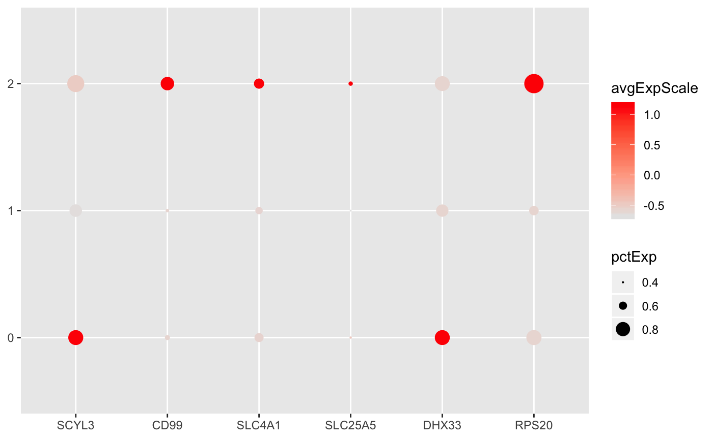

Plot Dot
# S4 method for seurat plotDot(object, genes, color = ggplot2::scale_color_gradient(low = "lightgray", high = "purple"), colMin = -2.5, colMax = 2.5, dotMin = 0L, dotScale = 6L)
| object | Object. |
|---|---|
| genes | Gene identifiers to plot. |
| color | Color palette. If |
| colMin | Minimum scaled average expression threshold. Everything smaller will be set to this. |
| colMax | Maximum scaled average expression threshold. Everything larger will be set to this. |
| dotMin | The fraction of cells at which to draw the smallest dot. All cell groups with less than this expressing the given gene will have no dot drawn. |
| dotScale | Scale the size of the points, similar to |
Seurat::DotPlot() is still plotting even when do.return = TRUE.
In the meantime, we've broken out the code into this generic to fix
RMarkdown looping of our marker plots.
Modified version of Seurat::DotPlot().
load(system.file( file.path("extdata", "seurat.rda"), package = "bcbioSingleCell")) # seurat genes <- slot(seurat, "data") %>% rownames() %>% head() plotDot(seurat, genes = genes)